P6DOF Theory¶
Introduction¶
This document exists to explain the physics of the P6DOF Mover (see the WSF_P6DOF_MOVER input type and the WsfP6DOF_Mover script class). The kinematic and dynamic equations are defined, and where applicable, parallels are drawn between the mathematical symbols in this document and existing P6DOF commands.
The WSF_P6DOF_MOVER provides a 6 DOF (degrees-of-freedom) physics-based mover that supports a wide range of aircraft and weapons modeling.
The 6DOFs include translational position (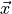) as well as attitude (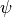,  ,
,  ).
The attitude of the vehicle is determined by momentum-based calculations, providing realistic vehicle pointing as well as proper angle of attack (
).
The attitude of the vehicle is determined by momentum-based calculations, providing realistic vehicle pointing as well as proper angle of attack ( ) and angle of sideslip (
) and angle of sideslip ( ) modeling.
Rotational kinematics are influenced by aerodynamic and propulsion forces and moments along with rotational inertia.
Although P6DOF movers include full 6DOF modeling, they utilize some angular/attitude simplifications to reduce the required data and to simplify control – hence the “pseudo” of the Pseudo-6DOF name.
In particular, they only use the diagonal of the inertia tensor to reduce inertial cross-coupling (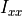, 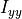, 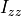).
However, P6DOF movers support a full 6 DOFs and include a detailed, stability derivative build-up approach to aerodynamics as described in this document.
This allows detailed aerodynamics modeling, based on Mach, to provide accurate modeling of the transonic, supersonic, and hypersonic regimes.
) modeling.
Rotational kinematics are influenced by aerodynamic and propulsion forces and moments along with rotational inertia.
Although P6DOF movers include full 6DOF modeling, they utilize some angular/attitude simplifications to reduce the required data and to simplify control – hence the “pseudo” of the Pseudo-6DOF name.
In particular, they only use the diagonal of the inertia tensor to reduce inertial cross-coupling (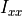, 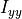, 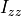).
However, P6DOF movers support a full 6 DOFs and include a detailed, stability derivative build-up approach to aerodynamics as described in this document.
This allows detailed aerodynamics modeling, based on Mach, to provide accurate modeling of the transonic, supersonic, and hypersonic regimes.
P6DOF movers include type-specific modeling of turbojets, turbofans, ramjets/scramjets, liquid-propellant rockets, and solid-propellant rockets, providing a wide range of propulsion types. This means each engine model includes the parameters that have the largest impact on thrust performance, such as Mach and altitude.
List of Symbols¶
Symbol |
Definition |
P6DOF Command |
P6DOF Script Method |
|---|---|---|---|
|
angle of attack |
||
|
angle of side slip |
||
|
Mach number |
||
yaw angle |
|||
|
pitch angle |
||
|
roll angle |
||
|
body yaw rate |
||
|
body pitch rate |
||
|
body roll rate |
||
wing chord |
|||
wing span |
|||
|
time |
||
inertial position |
|||
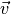 |
inertial velocity |
||
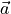 |
inertial acceleration |
||
|
rotational velocity |
||
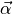 |
rotational acceleration |
||
velocity unit vector in inertial coordinates |
|||
|
direction cosine matrix transforming a vector in the inertial frame to the body frame |
||
|
mass |
||
moment of inertia matrix |
moment_of_inertia_ixx, moment_of_inertia_iyy, moment_of_inertia_izz |
||
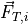 |
total force in the inertial frame |
||
|
total moment |
||
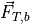 |
total force in the body frame |
||
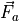 |
aerodynamic force in the body frame |
||
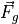 |
gravitational force in the body frame |
||
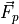 |
force from propulsion in the body frame |
||
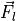 |
force from the landing gear in the body frame |
||
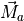 |
moment produced from aerodynamics |
||
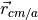 |
center of mass relative to the aerodynamic reference point |
||
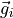 |
gravitational vector in the inertial frame |
||
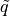 |
dynamic pressure |
||
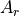 |
reference area |
||
|
area multiplier |
||
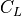 |
lift coefficient |
||
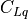 |
lift coefficient contribution due to pitch rate, 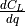 |
||
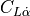 |
lift coefficient contribution due to the rate of change of angle of attack, 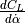 |
||
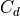 |
drag coefficient |
||
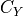 |
side force coefficient |
||
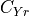 |
side force coefficient contribution due to yaw rate, 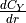 |
||
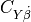 |
side force coefficient contribution due to the rate of change of side slip, 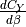 |
||
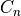 |
yaw moment coefficient |
||
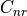 |
yaw moment coefficient contribution due to yaw rate, 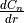 |
||
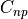 |
yaw moment coefficient contribution due to roll rate, 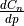 |
||
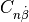 |
yaw moment coefficient contribution due to the rate of change of side slip, 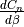 |
||
|
pitch moment coefficient |
||
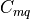 |
pitch moment coefficient contribution due to pitch rate, 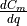 |
||
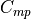 |
pitch moment coefficient contribution due to roll rate, |
||
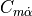 |
pitch moment coefficient contribution due to the rate of change of angle of attack, 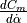 |
||
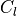 |
roll moment coefficient |
||
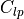 |
roll moment coefficient contribution due to roll rate, 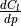 |
||
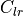 |
roll moment coefficient contribution due to yaw rate, 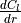 |
||
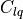 |
roll moment coefficient contribution due to pitch rate, 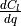 |
||
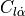 |
roll moment coefficient contribution due to the rate of change of angle of attack, |
||
roll moment coefficient contribution due to the rate of change of side slip, |
|||
lift unit vector in body coordinates |
|||
drag unit vector in body coordinates |
|||
side force unit vector in body coordinates |
|||
|
engine thrust, dependent on the engine type |
||
thrust unit vector in the body frame |


Equations of Motion¶
The inertial acceleration is found by dividing the total inertial force by the total mass. In a similar manner, the rotational acceleration is found by dividing the total moment by the total moment of inertia. These accelerations, given by (1), are computed using the average force and moment between two time steps, as shown in equation (2).
(1)¶
(2)¶
It should be noted that one of the simplifications of P6DOF is that the moment of inertia from (1) is a diagonal matrix given by (3).
(3)¶
First, the force and moment are computed at the current time step, which are used to calculate the linear and angular acceleration. Then, the states are propagated forward in time using (4). The force and moment are then computed at this new state, producing and . The average force and the average moment are computed using (2). These are then used to compute the linear and angular accelerations in (1). The states are then updated using (4).
(4)¶
The body angular rates  , quaternion , and rate quaternion are defined in (5).
, quaternion , and rate quaternion are defined in (5).
(5)¶![\vec{\omega} &=
\left[ {\begin{array}{ccc}
r & q & p
\end{array}} \right]^\top
\vec{Q} &=
\left[ {\begin{array}{c}
\cos{\frac{\psi}{2}} \cos{\frac{\theta}{2}} \cos{\frac{\phi}{2}} + \sin{\frac{\psi}{2}} \sin{\frac{\theta}{2}} \sin{\frac{\phi}{2}} \\
\cos{\frac{\psi}{2}} \cos{\frac{\theta}{2}} \sin{\frac{\phi}{2}} - \sin{\frac{\psi}{2}} \sin{\frac{\theta}{2}} \cos{\frac{\phi}{2}} \\
\cos{\frac{\psi}{2}} \sin{\frac{\theta}{2}} \cos{\frac{\phi}{2}} + \sin{\frac{\psi}{2}} \cos{\frac{\theta}{2}} \cos{\frac{\phi}{2}} \\
\sin{\frac{\psi}{2}} \cos{\frac{\theta}{2}} \cos{\frac{\phi}{2}} - \cos{\frac{\psi}{2}} \sin{\frac{\theta}{2}} \sin{\frac{\phi}{2}}
\end{array}} \right]
\vec{\dot{Q_t}} &= \frac{1}{2}
\left[ {\begin{array}{cccc}
0 & -r & -q & -p \\
r & 0 & p & -q \\
q & -p & 0 & r \\
p & q & -r & 0
\end{array}} \right]
\vec{Q}_t](../_images/math/b47419475869edb13ee6aa4f018b2d5bfba4291b.png)
If the quaternion is defined by , then the corresponding direction cosine matrix is computed using (6).
(6)¶
Forces and Moments¶
The forces are calculated in the body frame, and then converted to the inertial frame to use in equation (1). This conversion is accomplished through equation (7).
(7)¶
where  is defined as a 3-2-1 rotation matrix (yaw-pitch-roll) shown in equation (8).
is defined as a 3-2-1 rotation matrix (yaw-pitch-roll) shown in equation (8).
(8)¶
The total body force, from equation (7) is calculated as the sum of the aerodynamic, gravitational, and propulsion forces in the body frame. It also includes, if applicable, the force from landing gear.
The total moment is given by equation (9).
(9)¶
The body frame gravitational force is calculated in (10).
(10)¶
The body frame propulsion force is given by (11).
(11)¶
The force and moment produced from aerodynamics is given by (12) and (13).
(12)¶
(13)¶
The vectors , , in (13) are the unit vectors that form the standard orthonormal basis in the body frame.
The vectors , , in (12) are the lift, drag, and side force unit vectors in the body frame, and are computed using (14).
(14)¶
Reduced Frequency¶
The reduced frequencies 1, denoted by , in (12) and (13) are calculated using (15). If use_reduced_frequency is set to false, then the corresponding angular rates are used instead of the non-dimensional reduced frequencies, and the stability derivative tables should be adjusted accordingly.
(15)¶![k_{Lq} &= \frac{\overline{c} q}{2 \lVert \vec{v} \rVert}
k_{L\dot{\alpha}} &= \frac{\overline{c}\dot{\alpha}}{2 \lVert \vec{v} \rVert}
k_{Yr} &= \frac{\overline{s} r}{2 \lVert \vec{v} \rVert}
k_{Y\dot{\beta}} &= \frac{\overline{s} \dot{\beta}}{2 \lVert \vec{v} \rVert}
k_{lp} &= \frac{\overline{s} p}{2 \lVert \vec{v} \rVert}
k_{lr} &= \frac{\overline{s} r}{2 \lVert \vec{v} \rVert}
k_{lq} &= \frac{\overline{s} q}{2 \lVert \vec{v} \rVert}
k_{mq} &= \frac{\overline{c} q}{2 \lVert \vec{v} \rVert}
k_{mp} &= \frac{\overline{c} p}{2 \lVert \vec{v} \rVert}
k_{m\dot{\alpha}} &= \frac{\overline{c} \dot{\alpha}}{2 \lVert \vec{v} \rVert}
k_{nr} &= \frac{\overline{s} r}{2 \lVert \vec{v} \rVert}
k_{np} &= \frac{\overline{s} p}{2 \lVert \vec{v} \rVert}
k_{n\dot{\beta}} &= \frac{\overline{s} \dot{\beta}}{2 \lVert \vec{v} \rVert}](../_images/math/bb8d6b8cd41675784d43929c230bfc74a67038fc.png)
The terms and refer to the wing chord and span, respectively.
References
- 1
Jenkins, J. “Dynamic Stability Derivatives”, Air Force Research Laboratory - Aerodynamic Technology Branch Aerospace Vehicles Division, June 2015. AFRL-RQ-WP-TR-2015-0141.